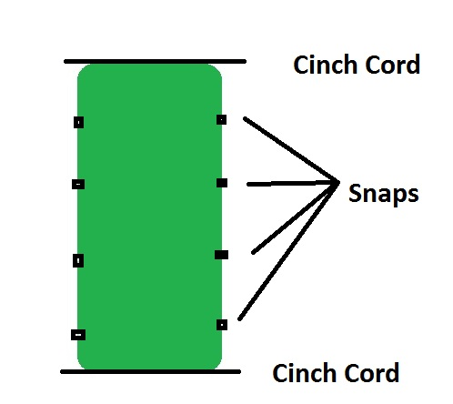
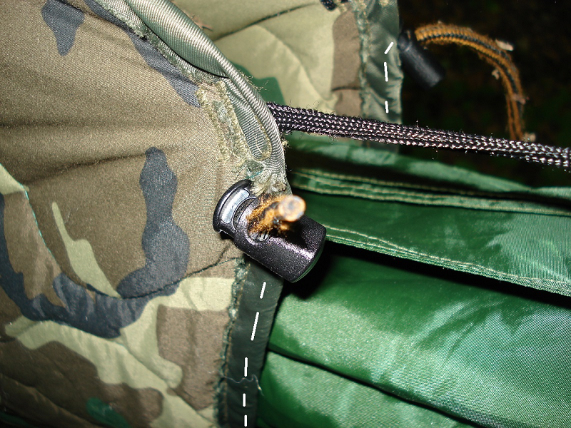
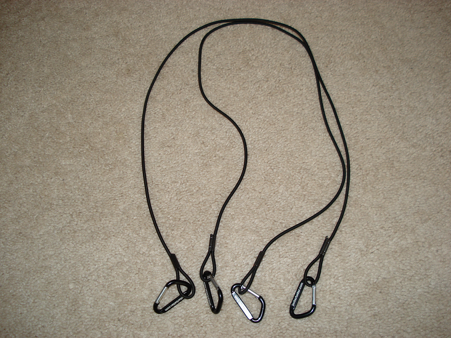
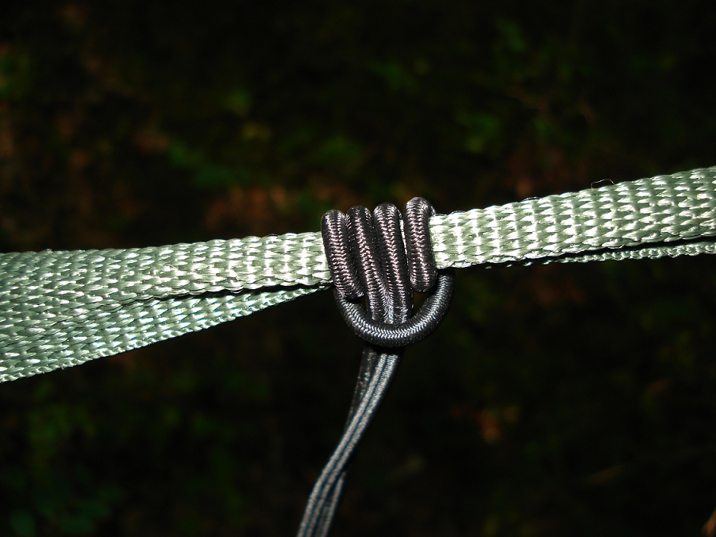
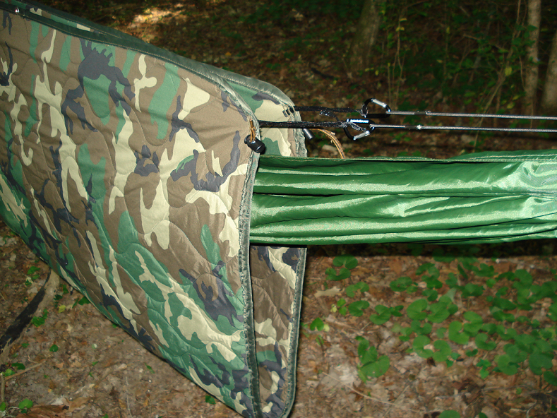
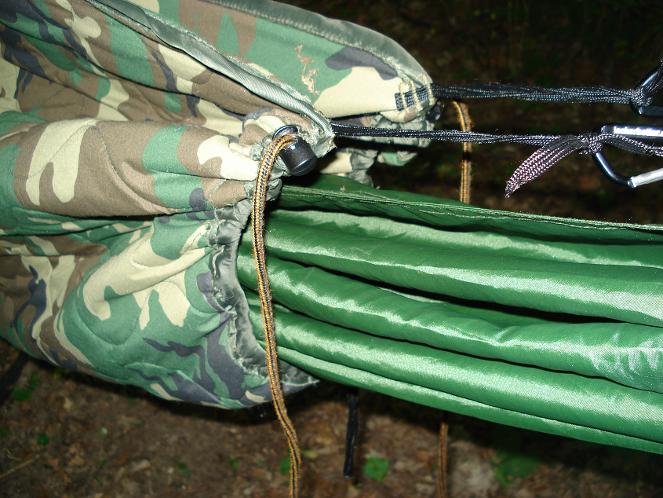
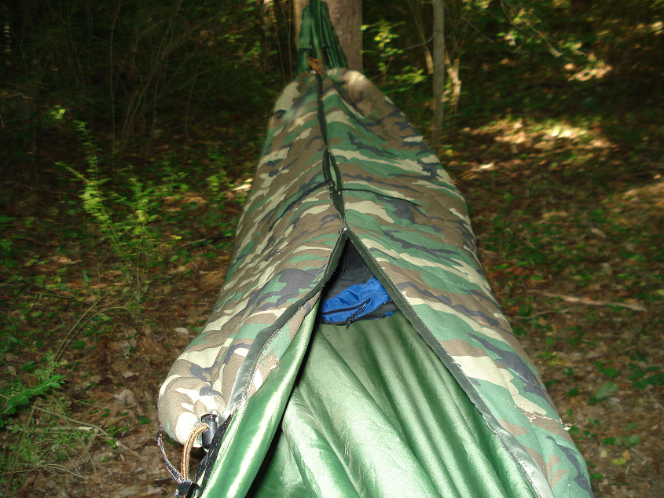

The poncho liner is arguably one of the best pieces of equipment the US Army ever procured. It has seen more duty, in more places in more ways than just about anything else.
Some time ago I purchased a Wiggys poncho liner insulated with Lamilite. It's thicker, bulkier but warmer than an issue liner. I've made several modifications to it that I'd like to share.
Modification 1 is to simply buy a snap kit and install snaps down the long side of the liner. This allows you to snap the sides together to make an improvised sleeping bag. You can use the string ties for this, but the snaps allow me to easily bust out of the bag if I should need to make a quick exit. With ties, I have to wiggle out or untie the ties.
Modification 2 is to install drawstrings or cinch cords at the head and foot end of the liner, using barrel locks as the tensioning device. Installing drawstring at the head and foot allow you to cinch the foot area closed when using it as a sleeping bag and cinch it tight around your neck.
Since you can cinch the bag closed at the foot, you no longer have to fold the foot area under and thus sacrifice length. You can have your feet all the way at the bottom of the liner and still keep them warm.
This is an overview of what we want:

Installing the snaps are pretty simple. Just buy a snap kit at the store and use a hammer to set the snaps.
Now let me show you how I installed the drawstrings. You simply make a small nick in the hem on each side of the liner and feed a cord through the hem from one side to the other. The dotted white line shows the path of the cord inside the hem of the liner. You'll need to do this at the head and the foot ends.
Once the cord is fed through the hem, just install a barrel lock on each side. This will allow you to cinch the ends together.

Once you've done this at the foot end and head end - you're done. You can now use the liner as a much more functional sleeping bag. Total cost: A few dollars for the snap kit, about a dollar for the barrel locks (or scavenge them from an old piece of gear).
Now I'm going to show you how I use this as a hammock underquilt.
When using a hammock in cooler temps, your backside will become uncomfortably cold when the temperature drops below 70 degrees or so. If you put a sleeping bag inside the hammock and lay on it, you compress the insulation and it loses it's insulation value.
You can take a closed cell foam pad (CCF) and use that. They are cheap and work well, but can be difficult in a hammock because you slide off them during the night. They also end up causing wetness and condensation on your backside as the moisture cannot escape.
The best solution to keeping warm in a hammock is an under quilt. An under quilt is an insulation layer that is suspended beneath the hammock. This way the user does not compress the insulation. The trouble is, the insulation must be held close to the hammock, it must have stretch and give, and it must be light enough to not sag away from the bottom of the hammock.
An under quilt allows you to toss and turn all night an always be warm. You can buy cottage made down under quilts for about $300. They are very well made - but very expensive.
The first thing we need is a "suspension system" to attach the under quilt to our hammock.I made mine out of some shock cord and two small biners. Here's what it looks like:

So let's get into the woods and get it setup.
I'm using my Claytor NoNet in these pictures. It's a double bottom hammock with no net built in. I like it for cooler weather when bugs aren't an issue. The double bottom allows you slide in between layers and fold the top layer of fabric over you for additional warmth. You can also spray it with Permethrin and have protection from bugs as well.
Once the hammock is tied up, attach the suspension cords to the main line using a prusik knot:

The prusik knot allows you to slide the cords up and down the main line to get the right tension.
Next attach the poncho liner under quilt by clipping the biners into the loops at each corner of the poncho liner:

At this point you'll notice the extra space at the foot and head end of the hammock. Cold air can easily circulate between the bottom of the hammock and the under quilt. We'll use our drawstring cinch cords to close that gap like so:

Notice how the cinch cords have allowed us to cinch the ends shut and seal out cold air.
Finally, we can use our snaps and snap the liner shut to form a cocoon of warmth that surrounds us completely:

I have used this setup down to about 40 degress. It's durable, fairly cheap and the poncho can be used as a button up sleeping bag when sleeping on the ground. I hope this helps!